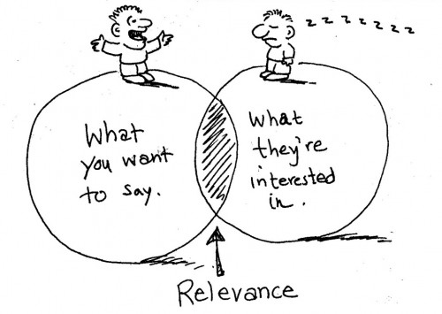
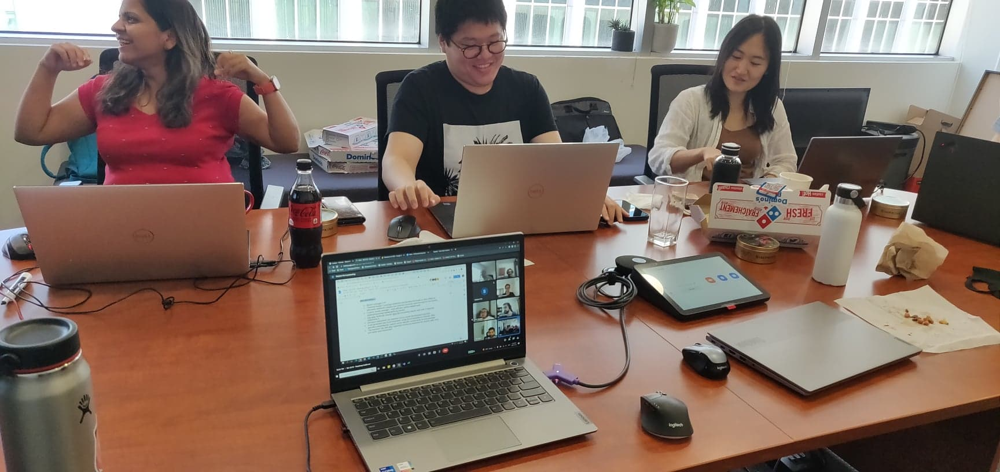
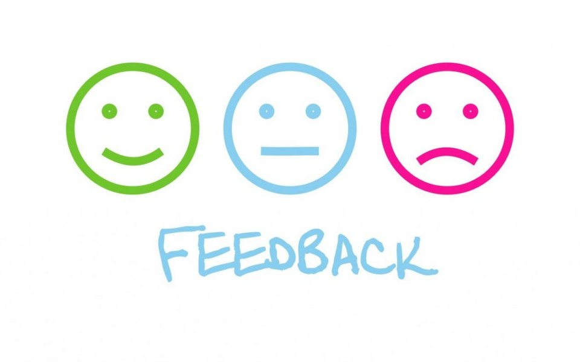
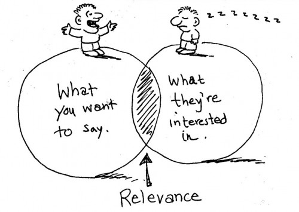
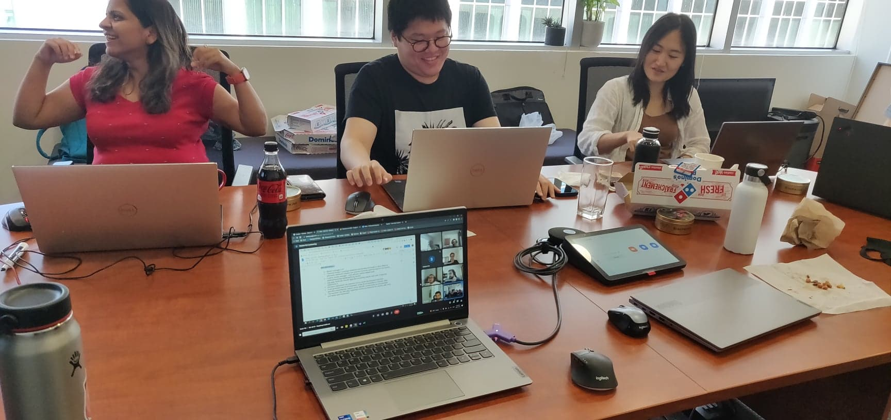

Teaching Philosophy
Developmental Perspective
When I first began tutoring students, my primary objective was to transfer information to them through the transmission perspective. I believed that it was enough for me to simply relay information to the students, with the assumption that they would follow along with my lesson. This approach worked effectively for straightforward topics that didn't require much detail. However, as the lessons became more complex, I realized that I needed to take a slower and more detailed approach to ensure that my students could comprehend the material. Despite my best efforts, I still encountered certain limitations, making it challenging for me to assess the student's learning levels accurately.
It was then that I realized that my approach was too teacher-centered. The lack of engagement from my students resulted in an oversight of their learning progress. That is when I began to focus more on being responsive to my students needs, transitioning to a developmental teaching perspective. Rather than simply assuming that my students had similar backgrounds, knowledge, and experiences to me, I made a conscious effort to identify gaps in their understanding and fill them in. This approach demanded more effort and patience on my part, but it ultimately resulted in a more engaged and confident class.
Lifelong Learning
In today's rapidly changing world, lifelong learning is becoming more critical than ever. Skills and knowledge that were once relevant may no longer be sufficient. Thus I am a firm believer that continuous learning is essential to keep up with new developments and to adapt to new situations.
How I’ve created environments that encouraged lifelong learning:
Relating material to my student’s lives and current events

My fondest memories as a student were when my teachers took the subject matter beyond the classroom walls. During these moments I found more purpose in my learning. I would be more engaged, and motivated, and even pursue the subject matter in my own time.
Now that I have more opportunities to be a teacher, I’ve made it a point to explain the relevancy and real-world applications of the material. While this can't be possible all the time for all curriculums, it's important for me to recognize opportunities for students to apply their knowledge to real-world problems.
Making frequent connections to the relevancy of the material can help develop a pattern of applying critical thinking skills to challenge the world around us.
Hosting knowledge-sharing sessions at my workplace

At my latest internship, I hosted a few knowledge-sharing sessions with my team. The goal was to encourage collaboration and pool our experiences together so that we could all learn from each other. It served as a fantastic reminder that we are all capable of learning, regardless of our age, skill level, or profession.
Analysis of pedagogies
The developmental teaching perspective emphasizes the growth and development of students. This approach focuses on understanding the students needs and tailoring instructions to meet them. Thus it is important to conduct an assessment to determine students' current level of understanding. By assessing where each student is in their learning, teachers can better tailor their instruction to meet their needs. Observing any potential gaps in knowledge or understanding can help educators focus on addressing those areas before introducing new concepts. Regular feedback and assessment can help teachers stay informed about their student's progress and identify any necessary adjustments to their teaching methods. By monitoring student progress, teachers can also adapt their pace and teaching style to ensure they are meeting the needs of all learners.
In addition to conducting assessments, my approach to developmental teaching also involves explaining the purpose behind their learning. When students see the relevance and importance of what they are studying, they are more likely to be engaged and motivated to learn. Research has shown that students who have a clear understanding of why they are learning something are more likely to be successful in their academic pursuits [3]. Teachers can help students make connections between what they are learning in the classroom and how it applies to the real world. This approach to teaching can inspire students to pursue careers in fields related to their coursework and can help them see the practical applications of their learning. And while purposeful learning may not always be possible for all types of curriculum, I believe that teachers should try their best to actively identify opportunities for students to apply their knowledge to real-world problems.
Becoming critically reflective
Seeking feedback
As I strive to become a critically reflective teacher, I’ve begun to place a greater emphasis on consistently seeking feedback. Throughout my previous internships, I made a point to allocate any remaining time in onboarding meetings or knowledge-sharing sessions to request feedback on my performance and ways to improve. Despite past experiences and preparedness, there is always value in seeking feedback to uncover any gaps or oversights. Moreover, I found that seeking feedback from colleagues not only helped improve my teaching practices but also fostered more open and inclusive relationships among us.

Observing and collaborating with other colleagues
Along with seeking feedback, I have made it a habit to take diligent notes on the effective teaching strategies used by my colleagues and mentors. By doing so, I can reflect on what has worked for them and apply these strategies to my own teaching practices.
One example of this came from a colleague of mine who would create very detailed meeting agendas. I would personally take more of a brief overview approach. However, I noticed that when he led the meetings with this approach, the agenda flowed smoothly and everyone had clear expectations of what was next. This inspired me to create my own onboarding agenda where all the requirements were in a single place. This detailed overview of the process allowed me to effective onboard new members by setting clear goals and expectations for them.
In conclusion, seeking feedback and leveraging effective teaching strategies from observation are valuable practices that have benefited me in a variety of ways. By continuously learning and adapting, teachers can refine their teaching practices, resulting in better outcomes for their students.
Relating material to my student’s lives and current events
Now that I have more opportunities to be a teacher, I’ve made it a point to explain the relevancy and real-world applications of the material. While this can't be possible all the time for all curriculums, it's important for me to recognize opportunities for students to apply their knowledge to real-world problems.
Making frequent connections to the relevancy of the material can help develop a pattern of applying critical thinking skills to challenge the world around us.
Hosting knowledge-sharing sessions at my workplace

At my latest internship, I hosted a few knowledge-sharing sessions with my team. The goal was to encourage collaboration and pool our experiences together so that we could all learn from each other. It served as a fantastic reminder that we are all capable of learning, regardless of our age, skill level, or profession.